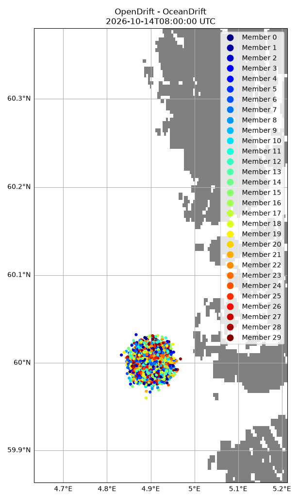
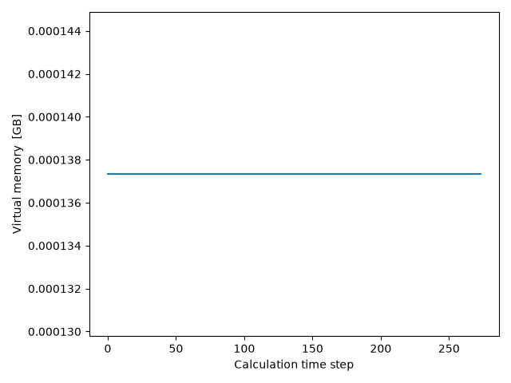

Note
Go to the end to download the full example code.
Ensemble
from datetime import timedelta
import numpy as np
from opendrift.models.oceandrift import OceanDrift
from opendrift.readers import reader_netCDF_CF_generic
Drift simulation using 30 member ensemble wind data from MEPS model of MET Norway
o = OceanDrift(loglevel=20)
o.set_config('drift:vertical_mixing', False)
r = reader_netCDF_CF_generic.Reader('https://thredds.met.no/thredds/dodsC/mepslatest/meps_lagged_6_h_latest_2_5km_latest.nc')
o.add_reader(r)
o.seed_elements(lat=60, lon=4.9, time=r.start_time,
radius=1000, number=10000)
o.run(duration=timedelta(hours=50), time_step=600, time_step_output=3600)
10:38:58 INFO opendrift:569: OpenDriftSimulation initialised (version 1.14.11 / v1.14.12-52-g71f4a5f)
10:38:58 INFO opendrift.readers:67: Opening file with xr.open_dataset
10:40:08 INFO opendrift.readers.reader_netCDF_CF_generic:340: Detected dimensions: {'time': 'time', 'x': 'x', 'y': 'y'}
10:40:08 INFO opendrift.models.basemodel.environment:203: Adding a global landmask from GSHHG
10:40:14 INFO opendrift.models.basemodel.environment:227: Fallback values will be used for the following variables which have no readers:
10:40:14 INFO opendrift.models.basemodel.environment:230: x_sea_water_velocity: 0.000000
10:40:14 INFO opendrift.models.basemodel.environment:230: y_sea_water_velocity: 0.000000
10:40:14 INFO opendrift.models.basemodel.environment:230: sea_surface_height: 0.000000
10:40:14 INFO opendrift.models.basemodel.environment:230: upward_sea_water_velocity: 0.000000
10:40:14 INFO opendrift.models.basemodel.environment:230: ocean_vertical_diffusivity: 0.000000
10:40:14 INFO opendrift.models.basemodel.environment:230: horizontal_diffusivity: 0.000000
10:40:14 INFO opendrift.models.basemodel.environment:230: sea_surface_wave_significant_height: 0.000000
10:40:14 INFO opendrift.models.basemodel.environment:230: sea_surface_wave_stokes_drift_x_velocity: 0.000000
10:40:14 INFO opendrift.models.basemodel.environment:230: sea_surface_wave_stokes_drift_y_velocity: 0.000000
10:40:14 INFO opendrift.models.basemodel.environment:230: ocean_mixed_layer_thickness: 50.000000
10:40:14 INFO opendrift.models.basemodel.environment:230: sea_floor_depth_below_sea_level: 10000.000000
10:40:14 INFO opendrift:1910: Skipping environment variable ocean_vertical_diffusivity because of condition ['drift:vertical_mixing', 'is', False]
10:40:14 INFO opendrift:1910: Skipping environment variable ocean_mixed_layer_thickness because of condition ['drift:vertical_mixing', 'is', False]
10:40:14 INFO opendrift:1921: Storing previous values of element property lon because of condition (('general:coastline_action', 'in', ['stranding', 'previous']), 'or', ('general:seafloor_action', 'in', ['previous']))
10:40:14 INFO opendrift:1921: Storing previous values of element property lat because of condition (('general:coastline_action', 'in', ['stranding', 'previous']), 'or', ('general:seafloor_action', 'in', ['previous']))
10:40:14 INFO opendrift:1929: Storing previous values of environment variable sea_surface_height because of condition ['drift:vertical_advection', 'is', True]
10:40:14 INFO opendrift:958: Using existing reader for land_binary_mask to move elements to ocean
10:40:14 INFO opendrift:989: All points are in ocean
10:40:14 INFO opendrift:2237: 2026-10-14 08:00:00 - step 1 of 300 - 10000 active elements (0 deactivated)
10:40:15 WARNING opendrift.readers.interpolation.structured:63: Ensemble data currently not extrapolated towards seafloor
10:40:15 WARNING opendrift.readers.interpolation.structured:63: Ensemble data currently not extrapolated towards seafloor
10:40:15 INFO opendrift:2237: 2026-10-14 08:10:00 - step 2 of 300 - 10000 active elements (0 deactivated)
10:40:16 WARNING opendrift.readers.interpolation.structured:63: Ensemble data currently not extrapolated towards seafloor
10:40:16 WARNING opendrift.readers.interpolation.structured:63: Ensemble data currently not extrapolated towards seafloor
10:40:16 INFO opendrift:2237: 2026-10-14 08:20:00 - step 3 of 300 - 10000 active elements (0 deactivated)
10:40:16 INFO opendrift:2237: 2026-10-14 08:30:00 - step 4 of 300 - 10000 active elements (0 deactivated)
10:40:16 INFO opendrift:2237: 2026-10-14 08:40:00 - step 5 of 300 - 10000 active elements (0 deactivated)
10:40:16 INFO opendrift:2237: 2026-10-14 08:50:00 - step 6 of 300 - 10000 active elements (0 deactivated)
10:40:16 INFO opendrift:2237: 2026-10-14 09:00:00 - step 7 of 300 - 10000 active elements (0 deactivated)
10:40:16 INFO opendrift:2237: 2026-10-14 09:10:00 - step 8 of 300 - 10000 active elements (0 deactivated)
10:40:17 WARNING opendrift.readers.interpolation.structured:63: Ensemble data currently not extrapolated towards seafloor
10:40:17 WARNING opendrift.readers.interpolation.structured:63: Ensemble data currently not extrapolated towards seafloor
10:40:17 INFO opendrift:2237: 2026-10-14 09:20:00 - step 9 of 300 - 10000 active elements (0 deactivated)
10:40:17 INFO opendrift:2237: 2026-10-14 09:30:00 - step 10 of 300 - 10000 active elements (0 deactivated)
10:40:17 INFO opendrift:2237: 2026-10-14 09:40:00 - step 11 of 300 - 10000 active elements (0 deactivated)
10:40:18 INFO opendrift:2237: 2026-10-14 09:50:00 - step 12 of 300 - 10000 active elements (0 deactivated)
10:40:18 INFO opendrift:2237: 2026-10-14 10:00:00 - step 13 of 300 - 10000 active elements (0 deactivated)
10:40:18 INFO opendrift:2237: 2026-10-14 10:10:00 - step 14 of 300 - 10000 active elements (0 deactivated)
10:40:29 WARNING opendrift.readers.interpolation.structured:63: Ensemble data currently not extrapolated towards seafloor
10:40:29 WARNING opendrift.readers.interpolation.structured:63: Ensemble data currently not extrapolated towards seafloor
10:40:29 INFO opendrift:2237: 2026-10-14 10:20:00 - step 15 of 300 - 10000 active elements (0 deactivated)
10:40:30 INFO opendrift:2237: 2026-10-14 10:30:00 - step 16 of 300 - 10000 active elements (0 deactivated)
10:40:30 INFO opendrift:2237: 2026-10-14 10:40:00 - step 17 of 300 - 10000 active elements (0 deactivated)
10:40:30 INFO opendrift:2237: 2026-10-14 10:50:00 - step 18 of 300 - 10000 active elements (0 deactivated)
10:40:30 INFO opendrift:2237: 2026-10-14 11:00:00 - step 19 of 300 - 10000 active elements (0 deactivated)
10:40:30 INFO opendrift:2237: 2026-10-14 11:10:00 - step 20 of 300 - 10000 active elements (0 deactivated)
10:40:30 WARNING opendrift.readers.interpolation.structured:63: Ensemble data currently not extrapolated towards seafloor
10:40:30 WARNING opendrift.readers.interpolation.structured:63: Ensemble data currently not extrapolated towards seafloor
10:40:31 INFO opendrift:2237: 2026-10-14 11:20:00 - step 21 of 300 - 10000 active elements (0 deactivated)
10:40:31 INFO opendrift:2237: 2026-10-14 11:30:00 - step 22 of 300 - 10000 active elements (0 deactivated)
10:40:31 INFO opendrift:2237: 2026-10-14 11:40:00 - step 23 of 300 - 10000 active elements (0 deactivated)
10:40:31 INFO opendrift:2237: 2026-10-14 11:50:00 - step 24 of 300 - 10000 active elements (0 deactivated)
10:40:31 INFO opendrift:2237: 2026-10-14 12:00:00 - step 25 of 300 - 10000 active elements (0 deactivated)
10:40:31 INFO opendrift:2237: 2026-10-14 12:10:00 - step 26 of 300 - 10000 active elements (0 deactivated)
10:40:32 WARNING opendrift.readers.interpolation.structured:63: Ensemble data currently not extrapolated towards seafloor
10:40:32 WARNING opendrift.readers.interpolation.structured:63: Ensemble data currently not extrapolated towards seafloor
10:40:32 INFO opendrift:2237: 2026-10-14 12:20:00 - step 27 of 300 - 10000 active elements (0 deactivated)
10:40:32 INFO opendrift:2237: 2026-10-14 12:30:00 - step 28 of 300 - 10000 active elements (0 deactivated)
10:40:32 INFO opendrift:2237: 2026-10-14 12:40:00 - step 29 of 300 - 10000 active elements (0 deactivated)
10:40:32 INFO opendrift:2237: 2026-10-14 12:50:00 - step 30 of 300 - 10000 active elements (0 deactivated)
10:40:32 INFO opendrift:2237: 2026-10-14 13:00:00 - step 31 of 300 - 10000 active elements (0 deactivated)
10:40:32 INFO opendrift:2237: 2026-10-14 13:10:00 - step 32 of 300 - 10000 active elements (0 deactivated)
10:40:33 WARNING opendrift.readers.interpolation.structured:63: Ensemble data currently not extrapolated towards seafloor
10:40:33 WARNING opendrift.readers.interpolation.structured:63: Ensemble data currently not extrapolated towards seafloor
10:40:33 INFO opendrift:2237: 2026-10-14 13:20:00 - step 33 of 300 - 10000 active elements (0 deactivated)
10:40:33 INFO opendrift:2237: 2026-10-14 13:30:00 - step 34 of 300 - 10000 active elements (0 deactivated)
10:40:33 INFO opendrift:2237: 2026-10-14 13:40:00 - step 35 of 300 - 10000 active elements (0 deactivated)
10:40:33 INFO opendrift:2237: 2026-10-14 13:50:00 - step 36 of 300 - 10000 active elements (0 deactivated)
10:40:34 INFO opendrift:2237: 2026-10-14 14:00:00 - step 37 of 300 - 10000 active elements (0 deactivated)
10:40:34 INFO opendrift:2237: 2026-10-14 14:10:00 - step 38 of 300 - 10000 active elements (0 deactivated)
10:40:34 WARNING opendrift.readers.interpolation.structured:63: Ensemble data currently not extrapolated towards seafloor
10:40:34 WARNING opendrift.readers.interpolation.structured:63: Ensemble data currently not extrapolated towards seafloor
10:40:34 INFO opendrift:2237: 2026-10-14 14:20:00 - step 39 of 300 - 10000 active elements (0 deactivated)
10:40:34 INFO opendrift:2237: 2026-10-14 14:30:00 - step 40 of 300 - 10000 active elements (0 deactivated)
10:40:35 INFO opendrift:2237: 2026-10-14 14:40:00 - step 41 of 300 - 10000 active elements (0 deactivated)
10:40:35 INFO opendrift:2237: 2026-10-14 14:50:00 - step 42 of 300 - 10000 active elements (0 deactivated)
10:40:35 INFO opendrift:2237: 2026-10-14 15:00:00 - step 43 of 300 - 10000 active elements (0 deactivated)
10:40:35 INFO opendrift:2237: 2026-10-14 15:10:00 - step 44 of 300 - 10000 active elements (0 deactivated)
10:40:35 WARNING opendrift.readers.interpolation.structured:63: Ensemble data currently not extrapolated towards seafloor
10:40:35 WARNING opendrift.readers.interpolation.structured:63: Ensemble data currently not extrapolated towards seafloor
10:40:35 INFO opendrift:2237: 2026-10-14 15:20:00 - step 45 of 300 - 10000 active elements (0 deactivated)
10:40:36 INFO opendrift:2237: 2026-10-14 15:30:00 - step 46 of 300 - 10000 active elements (0 deactivated)
10:40:36 INFO opendrift:2237: 2026-10-14 15:40:00 - step 47 of 300 - 10000 active elements (0 deactivated)
10:40:36 INFO opendrift:2237: 2026-10-14 15:50:00 - step 48 of 300 - 10000 active elements (0 deactivated)
10:40:36 INFO opendrift:2237: 2026-10-14 16:00:00 - step 49 of 300 - 10000 active elements (0 deactivated)
10:40:36 INFO opendrift:2237: 2026-10-14 16:10:00 - step 50 of 300 - 10000 active elements (0 deactivated)
10:40:37 WARNING opendrift.readers.interpolation.structured:63: Ensemble data currently not extrapolated towards seafloor
10:40:37 WARNING opendrift.readers.interpolation.structured:63: Ensemble data currently not extrapolated towards seafloor
10:40:37 INFO opendrift:2237: 2026-10-14 16:20:00 - step 51 of 300 - 10000 active elements (0 deactivated)
10:40:37 INFO opendrift:2237: 2026-10-14 16:30:00 - step 52 of 300 - 10000 active elements (0 deactivated)
10:40:37 INFO opendrift:2237: 2026-10-14 16:40:00 - step 53 of 300 - 10000 active elements (0 deactivated)
10:40:37 INFO opendrift:2237: 2026-10-14 16:50:00 - step 54 of 300 - 10000 active elements (0 deactivated)
10:40:37 INFO opendrift:2237: 2026-10-14 17:00:00 - step 55 of 300 - 10000 active elements (0 deactivated)
10:40:37 INFO opendrift:2237: 2026-10-14 17:10:00 - step 56 of 300 - 10000 active elements (0 deactivated)
10:40:38 WARNING opendrift.readers.interpolation.structured:63: Ensemble data currently not extrapolated towards seafloor
10:40:38 WARNING opendrift.readers.interpolation.structured:63: Ensemble data currently not extrapolated towards seafloor
10:40:38 INFO opendrift:2237: 2026-10-14 17:20:00 - step 57 of 300 - 10000 active elements (0 deactivated)
10:40:38 INFO opendrift:2237: 2026-10-14 17:30:00 - step 58 of 300 - 10000 active elements (0 deactivated)
10:40:38 INFO opendrift:2237: 2026-10-14 17:40:00 - step 59 of 300 - 10000 active elements (0 deactivated)
10:40:38 INFO opendrift:2237: 2026-10-14 17:50:00 - step 60 of 300 - 10000 active elements (0 deactivated)
10:40:38 INFO opendrift:2237: 2026-10-14 18:00:00 - step 61 of 300 - 10000 active elements (0 deactivated)
10:40:38 INFO opendrift:2237: 2026-10-14 18:10:00 - step 62 of 300 - 10000 active elements (0 deactivated)
10:40:39 WARNING opendrift.readers.interpolation.structured:63: Ensemble data currently not extrapolated towards seafloor
10:40:39 WARNING opendrift.readers.interpolation.structured:63: Ensemble data currently not extrapolated towards seafloor
10:40:39 INFO opendrift:2237: 2026-10-14 18:20:00 - step 63 of 300 - 10000 active elements (0 deactivated)
10:40:39 INFO opendrift:2237: 2026-10-14 18:30:00 - step 64 of 300 - 10000 active elements (0 deactivated)
10:40:39 INFO opendrift:2237: 2026-10-14 18:40:00 - step 65 of 300 - 10000 active elements (0 deactivated)
10:40:39 INFO opendrift:2237: 2026-10-14 18:50:00 - step 66 of 300 - 10000 active elements (0 deactivated)
10:40:39 INFO opendrift:2237: 2026-10-14 19:00:00 - step 67 of 300 - 10000 active elements (0 deactivated)
10:40:40 INFO opendrift:2237: 2026-10-14 19:10:00 - step 68 of 300 - 10000 active elements (0 deactivated)
10:40:40 WARNING opendrift.readers.interpolation.structured:63: Ensemble data currently not extrapolated towards seafloor
10:40:40 WARNING opendrift.readers.interpolation.structured:63: Ensemble data currently not extrapolated towards seafloor
10:40:40 INFO opendrift:2237: 2026-10-14 19:20:00 - step 69 of 300 - 10000 active elements (0 deactivated)
10:40:40 INFO opendrift:2237: 2026-10-14 19:30:00 - step 70 of 300 - 10000 active elements (0 deactivated)
10:40:41 INFO opendrift:2237: 2026-10-14 19:40:00 - step 71 of 300 - 10000 active elements (0 deactivated)
10:40:41 INFO opendrift:2237: 2026-10-14 19:50:00 - step 72 of 300 - 10000 active elements (0 deactivated)
10:40:41 INFO opendrift:2237: 2026-10-14 20:00:00 - step 73 of 300 - 10000 active elements (0 deactivated)
10:40:41 INFO opendrift:2237: 2026-10-14 20:10:00 - step 74 of 300 - 10000 active elements (0 deactivated)
10:40:42 WARNING opendrift.readers.interpolation.structured:63: Ensemble data currently not extrapolated towards seafloor
10:40:42 WARNING opendrift.readers.interpolation.structured:63: Ensemble data currently not extrapolated towards seafloor
10:40:42 INFO opendrift:2237: 2026-10-14 20:20:00 - step 75 of 300 - 10000 active elements (0 deactivated)
10:40:42 INFO opendrift:2237: 2026-10-14 20:30:00 - step 76 of 300 - 10000 active elements (0 deactivated)
10:40:42 INFO opendrift:2237: 2026-10-14 20:40:00 - step 77 of 300 - 10000 active elements (0 deactivated)
10:40:42 INFO opendrift:2237: 2026-10-14 20:50:00 - step 78 of 300 - 10000 active elements (0 deactivated)
10:40:42 INFO opendrift:2237: 2026-10-14 21:00:00 - step 79 of 300 - 10000 active elements (0 deactivated)
10:40:42 INFO opendrift:2237: 2026-10-14 21:10:00 - step 80 of 300 - 10000 active elements (0 deactivated)
10:40:43 WARNING opendrift.readers.interpolation.structured:63: Ensemble data currently not extrapolated towards seafloor
10:40:43 WARNING opendrift.readers.interpolation.structured:63: Ensemble data currently not extrapolated towards seafloor
10:40:43 INFO opendrift:2237: 2026-10-14 21:20:00 - step 81 of 300 - 10000 active elements (0 deactivated)
10:40:43 INFO opendrift:2237: 2026-10-14 21:30:00 - step 82 of 300 - 10000 active elements (0 deactivated)
10:40:43 INFO opendrift:2237: 2026-10-14 21:40:00 - step 83 of 300 - 10000 active elements (0 deactivated)
10:40:43 INFO opendrift:2237: 2026-10-14 21:50:00 - step 84 of 300 - 10000 active elements (0 deactivated)
10:40:43 INFO opendrift:2237: 2026-10-14 22:00:00 - step 85 of 300 - 10000 active elements (0 deactivated)
10:40:43 INFO opendrift:2237: 2026-10-14 22:10:00 - step 86 of 300 - 10000 active elements (0 deactivated)
10:40:44 WARNING opendrift.readers.interpolation.structured:63: Ensemble data currently not extrapolated towards seafloor
10:40:44 WARNING opendrift.readers.interpolation.structured:63: Ensemble data currently not extrapolated towards seafloor
10:40:44 INFO opendrift:2237: 2026-10-14 22:20:00 - step 87 of 300 - 10000 active elements (0 deactivated)
10:40:44 INFO opendrift:2237: 2026-10-14 22:30:00 - step 88 of 300 - 10000 active elements (0 deactivated)
10:40:44 INFO opendrift:2237: 2026-10-14 22:40:00 - step 89 of 300 - 10000 active elements (0 deactivated)
10:40:44 INFO opendrift:2237: 2026-10-14 22:50:00 - step 90 of 300 - 10000 active elements (0 deactivated)
10:40:45 INFO opendrift:2237: 2026-10-14 23:00:00 - step 91 of 300 - 10000 active elements (0 deactivated)
10:40:45 INFO opendrift:2237: 2026-10-14 23:10:00 - step 92 of 300 - 10000 active elements (0 deactivated)
10:40:45 WARNING opendrift.readers.interpolation.structured:63: Ensemble data currently not extrapolated towards seafloor
10:40:45 WARNING opendrift.readers.interpolation.structured:63: Ensemble data currently not extrapolated towards seafloor
10:40:45 INFO opendrift:2237: 2026-10-14 23:20:00 - step 93 of 300 - 10000 active elements (0 deactivated)
10:40:45 INFO opendrift:2237: 2026-10-14 23:30:00 - step 94 of 300 - 10000 active elements (0 deactivated)
10:40:46 INFO opendrift:2237: 2026-10-14 23:40:00 - step 95 of 300 - 10000 active elements (0 deactivated)
10:40:46 INFO opendrift:2237: 2026-10-14 23:50:00 - step 96 of 300 - 10000 active elements (0 deactivated)
10:40:46 INFO opendrift:2237: 2026-10-15 00:00:00 - step 97 of 300 - 10000 active elements (0 deactivated)
10:40:46 INFO opendrift:2237: 2026-10-15 00:10:00 - step 98 of 300 - 10000 active elements (0 deactivated)
10:40:46 WARNING opendrift.readers.interpolation.structured:63: Ensemble data currently not extrapolated towards seafloor
10:40:46 WARNING opendrift.readers.interpolation.structured:63: Ensemble data currently not extrapolated towards seafloor
10:40:47 INFO opendrift:2237: 2026-10-15 00:20:00 - step 99 of 300 - 10000 active elements (0 deactivated)
10:40:47 INFO opendrift:2237: 2026-10-15 00:30:00 - step 100 of 300 - 10000 active elements (0 deactivated)
10:40:47 INFO opendrift:2237: 2026-10-15 00:40:00 - step 101 of 300 - 10000 active elements (0 deactivated)
10:40:47 INFO opendrift:2237: 2026-10-15 00:50:00 - step 102 of 300 - 10000 active elements (0 deactivated)
10:40:47 INFO opendrift:2237: 2026-10-15 01:00:00 - step 103 of 300 - 10000 active elements (0 deactivated)
10:40:47 INFO opendrift:2237: 2026-10-15 01:10:00 - step 104 of 300 - 10000 active elements (0 deactivated)
10:40:48 WARNING opendrift.readers.interpolation.structured:63: Ensemble data currently not extrapolated towards seafloor
10:40:48 WARNING opendrift.readers.interpolation.structured:63: Ensemble data currently not extrapolated towards seafloor
10:40:48 INFO opendrift:2237: 2026-10-15 01:20:00 - step 105 of 300 - 10000 active elements (0 deactivated)
10:40:48 INFO opendrift:2237: 2026-10-15 01:30:00 - step 106 of 300 - 10000 active elements (0 deactivated)
10:40:48 INFO opendrift:2237: 2026-10-15 01:40:00 - step 107 of 300 - 10000 active elements (0 deactivated)
10:40:48 INFO opendrift:2237: 2026-10-15 01:50:00 - step 108 of 300 - 10000 active elements (0 deactivated)
10:40:48 INFO opendrift:2237: 2026-10-15 02:00:00 - step 109 of 300 - 10000 active elements (0 deactivated)
10:40:48 INFO opendrift:2237: 2026-10-15 02:10:00 - step 110 of 300 - 10000 active elements (0 deactivated)
10:40:49 WARNING opendrift.readers.interpolation.structured:63: Ensemble data currently not extrapolated towards seafloor
10:40:49 WARNING opendrift.readers.interpolation.structured:63: Ensemble data currently not extrapolated towards seafloor
10:40:49 INFO opendrift:2237: 2026-10-15 02:20:00 - step 111 of 300 - 10000 active elements (0 deactivated)
10:40:49 INFO opendrift:2237: 2026-10-15 02:30:00 - step 112 of 300 - 10000 active elements (0 deactivated)
10:40:49 INFO opendrift:2237: 2026-10-15 02:40:00 - step 113 of 300 - 10000 active elements (0 deactivated)
10:40:49 INFO opendrift:2237: 2026-10-15 02:50:00 - step 114 of 300 - 10000 active elements (0 deactivated)
10:40:50 INFO opendrift:2237: 2026-10-15 03:00:00 - step 115 of 300 - 10000 active elements (0 deactivated)
10:40:50 INFO opendrift:2237: 2026-10-15 03:10:00 - step 116 of 300 - 10000 active elements (0 deactivated)
10:40:50 WARNING opendrift.readers.interpolation.structured:63: Ensemble data currently not extrapolated towards seafloor
10:40:50 WARNING opendrift.readers.interpolation.structured:63: Ensemble data currently not extrapolated towards seafloor
10:40:50 INFO opendrift:2237: 2026-10-15 03:20:00 - step 117 of 300 - 10000 active elements (0 deactivated)
10:40:50 INFO opendrift:2237: 2026-10-15 03:30:00 - step 118 of 300 - 10000 active elements (0 deactivated)
10:40:51 INFO opendrift:2237: 2026-10-15 03:40:00 - step 119 of 300 - 10000 active elements (0 deactivated)
10:40:51 INFO opendrift:2237: 2026-10-15 03:50:00 - step 120 of 300 - 10000 active elements (0 deactivated)
10:40:51 INFO opendrift:2237: 2026-10-15 04:00:00 - step 121 of 300 - 10000 active elements (0 deactivated)
10:40:51 INFO opendrift:2237: 2026-10-15 04:10:00 - step 122 of 300 - 10000 active elements (0 deactivated)
10:40:51 WARNING opendrift.readers.interpolation.structured:63: Ensemble data currently not extrapolated towards seafloor
10:40:52 WARNING opendrift.readers.interpolation.structured:63: Ensemble data currently not extrapolated towards seafloor
10:40:52 INFO opendrift:2237: 2026-10-15 04:20:00 - step 123 of 300 - 9999 active elements (1 deactivated)
10:40:52 INFO opendrift:2237: 2026-10-15 04:30:00 - step 124 of 300 - 9998 active elements (2 deactivated)
10:40:52 INFO opendrift:2237: 2026-10-15 04:40:00 - step 125 of 300 - 9997 active elements (3 deactivated)
10:40:52 INFO opendrift:2237: 2026-10-15 04:50:00 - step 126 of 300 - 9996 active elements (4 deactivated)
10:40:52 INFO opendrift:2237: 2026-10-15 05:00:00 - step 127 of 300 - 9990 active elements (10 deactivated)
10:40:52 INFO opendrift:2237: 2026-10-15 05:10:00 - step 128 of 300 - 9986 active elements (14 deactivated)
10:40:53 WARNING opendrift.readers.interpolation.structured:63: Ensemble data currently not extrapolated towards seafloor
10:40:53 WARNING opendrift.readers.interpolation.structured:63: Ensemble data currently not extrapolated towards seafloor
10:40:53 INFO opendrift:2237: 2026-10-15 05:20:00 - step 129 of 300 - 9984 active elements (16 deactivated)
10:40:53 INFO opendrift:2237: 2026-10-15 05:30:00 - step 130 of 300 - 9982 active elements (18 deactivated)
10:40:54 INFO opendrift:2237: 2026-10-15 05:40:00 - step 131 of 300 - 9982 active elements (18 deactivated)
10:40:54 INFO opendrift:2237: 2026-10-15 05:50:00 - step 132 of 300 - 9978 active elements (22 deactivated)
10:40:54 INFO opendrift:2237: 2026-10-15 06:00:00 - step 133 of 300 - 9977 active elements (23 deactivated)
10:40:54 INFO opendrift:2237: 2026-10-15 06:10:00 - step 134 of 300 - 9975 active elements (25 deactivated)
10:40:55 WARNING opendrift.readers.interpolation.structured:63: Ensemble data currently not extrapolated towards seafloor
10:40:55 WARNING opendrift.readers.interpolation.structured:63: Ensemble data currently not extrapolated towards seafloor
10:40:55 INFO opendrift:2237: 2026-10-15 06:20:00 - step 135 of 300 - 9973 active elements (27 deactivated)
10:40:55 INFO opendrift:2237: 2026-10-15 06:30:00 - step 136 of 300 - 9970 active elements (30 deactivated)
10:40:55 INFO opendrift:2237: 2026-10-15 06:40:00 - step 137 of 300 - 9968 active elements (32 deactivated)
10:40:55 INFO opendrift:2237: 2026-10-15 06:50:00 - step 138 of 300 - 9967 active elements (33 deactivated)
10:40:55 INFO opendrift:2237: 2026-10-15 07:00:00 - step 139 of 300 - 9965 active elements (35 deactivated)
10:40:56 INFO opendrift:2237: 2026-10-15 07:10:00 - step 140 of 300 - 9964 active elements (36 deactivated)
10:40:56 WARNING opendrift.readers.interpolation.structured:63: Ensemble data currently not extrapolated towards seafloor
10:40:56 WARNING opendrift.readers.interpolation.structured:63: Ensemble data currently not extrapolated towards seafloor
10:40:56 INFO opendrift:2237: 2026-10-15 07:20:00 - step 141 of 300 - 9958 active elements (42 deactivated)
10:40:56 INFO opendrift:2237: 2026-10-15 07:30:00 - step 142 of 300 - 9954 active elements (46 deactivated)
10:40:57 INFO opendrift:2237: 2026-10-15 07:40:00 - step 143 of 300 - 9951 active elements (49 deactivated)
10:40:57 INFO opendrift:2237: 2026-10-15 07:50:00 - step 144 of 300 - 9948 active elements (52 deactivated)
10:40:57 INFO opendrift:2237: 2026-10-15 08:00:00 - step 145 of 300 - 9945 active elements (55 deactivated)
10:40:57 INFO opendrift:2237: 2026-10-15 08:10:00 - step 146 of 300 - 9941 active elements (59 deactivated)
10:40:58 WARNING opendrift.readers.interpolation.structured:63: Ensemble data currently not extrapolated towards seafloor
10:40:58 WARNING opendrift.readers.interpolation.structured:63: Ensemble data currently not extrapolated towards seafloor
10:40:58 INFO opendrift:2237: 2026-10-15 08:20:00 - step 147 of 300 - 9936 active elements (64 deactivated)
10:40:58 INFO opendrift:2237: 2026-10-15 08:30:00 - step 148 of 300 - 9925 active elements (75 deactivated)
10:40:58 INFO opendrift:2237: 2026-10-15 08:40:00 - step 149 of 300 - 9914 active elements (86 deactivated)
10:40:58 INFO opendrift:2237: 2026-10-15 08:50:00 - step 150 of 300 - 9902 active elements (98 deactivated)
10:40:58 INFO opendrift:2237: 2026-10-15 09:00:00 - step 151 of 300 - 9884 active elements (116 deactivated)
10:40:59 INFO opendrift:2237: 2026-10-15 09:10:00 - step 152 of 300 - 9865 active elements (135 deactivated)
10:40:59 WARNING opendrift.readers.interpolation.structured:63: Ensemble data currently not extrapolated towards seafloor
10:40:59 WARNING opendrift.readers.interpolation.structured:63: Ensemble data currently not extrapolated towards seafloor
10:40:59 INFO opendrift:2237: 2026-10-15 09:20:00 - step 153 of 300 - 9821 active elements (179 deactivated)
10:41:00 INFO opendrift:2237: 2026-10-15 09:30:00 - step 154 of 300 - 9787 active elements (213 deactivated)
10:41:00 INFO opendrift:2237: 2026-10-15 09:40:00 - step 155 of 300 - 9742 active elements (258 deactivated)
10:41:00 INFO opendrift:2237: 2026-10-15 09:50:00 - step 156 of 300 - 9690 active elements (310 deactivated)
10:41:00 INFO opendrift:2237: 2026-10-15 10:00:00 - step 157 of 300 - 9625 active elements (375 deactivated)
10:41:00 INFO opendrift:2237: 2026-10-15 10:10:00 - step 158 of 300 - 9548 active elements (452 deactivated)
10:41:01 WARNING opendrift.readers.interpolation.structured:63: Ensemble data currently not extrapolated towards seafloor
10:41:01 WARNING opendrift.readers.interpolation.structured:63: Ensemble data currently not extrapolated towards seafloor
10:41:01 INFO opendrift:2237: 2026-10-15 10:20:00 - step 159 of 300 - 9457 active elements (543 deactivated)
10:41:01 INFO opendrift:2237: 2026-10-15 10:30:00 - step 160 of 300 - 9331 active elements (669 deactivated)
10:41:01 INFO opendrift:2237: 2026-10-15 10:40:00 - step 161 of 300 - 9199 active elements (801 deactivated)
10:41:01 INFO opendrift:2237: 2026-10-15 10:50:00 - step 162 of 300 - 9044 active elements (956 deactivated)
10:41:01 INFO opendrift:2237: 2026-10-15 11:00:00 - step 163 of 300 - 8873 active elements (1127 deactivated)
10:41:02 INFO opendrift:2237: 2026-10-15 11:10:00 - step 164 of 300 - 8706 active elements (1294 deactivated)
10:41:02 WARNING opendrift.readers.interpolation.structured:63: Ensemble data currently not extrapolated towards seafloor
10:41:02 WARNING opendrift.readers.interpolation.structured:63: Ensemble data currently not extrapolated towards seafloor
10:41:02 INFO opendrift:2237: 2026-10-15 11:20:00 - step 165 of 300 - 8527 active elements (1473 deactivated)
10:41:02 INFO opendrift:2237: 2026-10-15 11:30:00 - step 166 of 300 - 8309 active elements (1691 deactivated)
10:41:03 INFO opendrift:2237: 2026-10-15 11:40:00 - step 167 of 300 - 8129 active elements (1871 deactivated)
10:41:03 INFO opendrift:2237: 2026-10-15 11:50:00 - step 168 of 300 - 7905 active elements (2095 deactivated)
10:41:03 INFO opendrift:2237: 2026-10-15 12:00:00 - step 169 of 300 - 7640 active elements (2360 deactivated)
10:41:03 INFO opendrift:2237: 2026-10-15 12:10:00 - step 170 of 300 - 7424 active elements (2576 deactivated)
10:41:04 WARNING opendrift.readers.interpolation.structured:63: Ensemble data currently not extrapolated towards seafloor
10:41:04 WARNING opendrift.readers.interpolation.structured:63: Ensemble data currently not extrapolated towards seafloor
10:41:04 INFO opendrift:2237: 2026-10-15 12:20:00 - step 171 of 300 - 7174 active elements (2826 deactivated)
10:41:04 INFO opendrift:2237: 2026-10-15 12:30:00 - step 172 of 300 - 6922 active elements (3078 deactivated)
10:41:04 INFO opendrift:2237: 2026-10-15 12:40:00 - step 173 of 300 - 6652 active elements (3348 deactivated)
10:41:04 INFO opendrift:2237: 2026-10-15 12:50:00 - step 174 of 300 - 6416 active elements (3584 deactivated)
10:41:04 INFO opendrift:2237: 2026-10-15 13:00:00 - step 175 of 300 - 6154 active elements (3846 deactivated)
10:41:04 INFO opendrift:2237: 2026-10-15 13:10:00 - step 176 of 300 - 5881 active elements (4119 deactivated)
10:41:05 WARNING opendrift.readers.interpolation.structured:63: Ensemble data currently not extrapolated towards seafloor
10:41:05 WARNING opendrift.readers.interpolation.structured:63: Ensemble data currently not extrapolated towards seafloor
10:41:05 INFO opendrift:2237: 2026-10-15 13:20:00 - step 177 of 300 - 5617 active elements (4383 deactivated)
10:41:05 INFO opendrift:2237: 2026-10-15 13:30:00 - step 178 of 300 - 5358 active elements (4642 deactivated)
10:41:05 INFO opendrift:2237: 2026-10-15 13:40:00 - step 179 of 300 - 5095 active elements (4905 deactivated)
10:41:05 INFO opendrift:2237: 2026-10-15 13:50:00 - step 180 of 300 - 4834 active elements (5166 deactivated)
10:41:05 INFO opendrift:2237: 2026-10-15 14:00:00 - step 181 of 300 - 4570 active elements (5430 deactivated)
10:41:06 INFO opendrift:2237: 2026-10-15 14:10:00 - step 182 of 300 - 4331 active elements (5669 deactivated)
10:41:06 WARNING opendrift.readers.interpolation.structured:63: Ensemble data currently not extrapolated towards seafloor
10:41:06 WARNING opendrift.readers.interpolation.structured:63: Ensemble data currently not extrapolated towards seafloor
10:41:06 INFO opendrift:2237: 2026-10-15 14:20:00 - step 183 of 300 - 4083 active elements (5917 deactivated)
10:41:06 INFO opendrift:2237: 2026-10-15 14:30:00 - step 184 of 300 - 3851 active elements (6149 deactivated)
10:41:06 INFO opendrift:2237: 2026-10-15 14:40:00 - step 185 of 300 - 3617 active elements (6383 deactivated)
10:41:07 INFO opendrift:2237: 2026-10-15 14:50:00 - step 186 of 300 - 3403 active elements (6597 deactivated)
10:41:07 INFO opendrift:2237: 2026-10-15 15:00:00 - step 187 of 300 - 3203 active elements (6797 deactivated)
10:41:07 INFO opendrift:2237: 2026-10-15 15:10:00 - step 188 of 300 - 2973 active elements (7027 deactivated)
10:41:07 WARNING opendrift.readers.interpolation.structured:63: Ensemble data currently not extrapolated towards seafloor
10:41:07 WARNING opendrift.readers.interpolation.structured:63: Ensemble data currently not extrapolated towards seafloor
10:41:07 INFO opendrift:2237: 2026-10-15 15:20:00 - step 189 of 300 - 2776 active elements (7224 deactivated)
10:41:07 INFO opendrift:2237: 2026-10-15 15:30:00 - step 190 of 300 - 2582 active elements (7418 deactivated)
10:41:07 INFO opendrift:2237: 2026-10-15 15:40:00 - step 191 of 300 - 2391 active elements (7609 deactivated)
10:41:08 INFO opendrift:2237: 2026-10-15 15:50:00 - step 192 of 300 - 2225 active elements (7775 deactivated)
10:41:08 INFO opendrift:2237: 2026-10-15 16:00:00 - step 193 of 300 - 2077 active elements (7923 deactivated)
10:41:08 INFO opendrift:2237: 2026-10-15 16:10:00 - step 194 of 300 - 1935 active elements (8065 deactivated)
10:41:08 WARNING opendrift.readers.interpolation.structured:63: Ensemble data currently not extrapolated towards seafloor
10:41:08 WARNING opendrift.readers.interpolation.structured:63: Ensemble data currently not extrapolated towards seafloor
10:41:08 INFO opendrift:2237: 2026-10-15 16:20:00 - step 195 of 300 - 1778 active elements (8222 deactivated)
10:41:08 INFO opendrift:2237: 2026-10-15 16:30:00 - step 196 of 300 - 1617 active elements (8383 deactivated)
10:41:08 INFO opendrift:2237: 2026-10-15 16:40:00 - step 197 of 300 - 1497 active elements (8503 deactivated)
10:41:09 INFO opendrift:2237: 2026-10-15 16:50:00 - step 198 of 300 - 1375 active elements (8625 deactivated)
10:41:09 INFO opendrift:2237: 2026-10-15 17:00:00 - step 199 of 300 - 1269 active elements (8731 deactivated)
10:41:09 INFO opendrift:2237: 2026-10-15 17:10:00 - step 200 of 300 - 1174 active elements (8826 deactivated)
10:41:09 WARNING opendrift.readers.interpolation.structured:63: Ensemble data currently not extrapolated towards seafloor
10:41:09 WARNING opendrift.readers.interpolation.structured:63: Ensemble data currently not extrapolated towards seafloor
10:41:09 INFO opendrift:2237: 2026-10-15 17:20:00 - step 201 of 300 - 1081 active elements (8919 deactivated)
10:41:09 INFO opendrift:2237: 2026-10-15 17:30:00 - step 202 of 300 - 975 active elements (9025 deactivated)
10:41:09 INFO opendrift:2237: 2026-10-15 17:40:00 - step 203 of 300 - 892 active elements (9108 deactivated)
10:41:09 INFO opendrift:2237: 2026-10-15 17:50:00 - step 204 of 300 - 836 active elements (9164 deactivated)
10:41:09 INFO opendrift:2237: 2026-10-15 18:00:00 - step 205 of 300 - 747 active elements (9253 deactivated)
10:41:09 INFO opendrift:2237: 2026-10-15 18:10:00 - step 206 of 300 - 697 active elements (9303 deactivated)
10:41:10 WARNING opendrift.readers.interpolation.structured:63: Ensemble data currently not extrapolated towards seafloor
10:41:10 WARNING opendrift.readers.interpolation.structured:63: Ensemble data currently not extrapolated towards seafloor
10:41:10 INFO opendrift:2237: 2026-10-15 18:20:00 - step 207 of 300 - 632 active elements (9368 deactivated)
10:41:10 INFO opendrift:2237: 2026-10-15 18:30:00 - step 208 of 300 - 596 active elements (9404 deactivated)
10:41:10 INFO opendrift:2237: 2026-10-15 18:40:00 - step 209 of 300 - 535 active elements (9465 deactivated)
10:41:10 INFO opendrift:2237: 2026-10-15 18:50:00 - step 210 of 300 - 489 active elements (9511 deactivated)
10:41:10 INFO opendrift:2237: 2026-10-15 19:00:00 - step 211 of 300 - 450 active elements (9550 deactivated)
10:41:10 INFO opendrift:2237: 2026-10-15 19:10:00 - step 212 of 300 - 404 active elements (9596 deactivated)
10:41:11 WARNING opendrift.readers.interpolation.structured:63: Ensemble data currently not extrapolated towards seafloor
10:41:11 WARNING opendrift.readers.interpolation.structured:63: Ensemble data currently not extrapolated towards seafloor
10:41:11 INFO opendrift:2237: 2026-10-15 19:20:00 - step 213 of 300 - 368 active elements (9632 deactivated)
10:41:11 INFO opendrift:2237: 2026-10-15 19:30:00 - step 214 of 300 - 347 active elements (9653 deactivated)
10:41:11 INFO opendrift:2237: 2026-10-15 19:40:00 - step 215 of 300 - 325 active elements (9675 deactivated)
10:41:11 INFO opendrift:2237: 2026-10-15 19:50:00 - step 216 of 300 - 297 active elements (9703 deactivated)
10:41:11 INFO opendrift:2237: 2026-10-15 20:00:00 - step 217 of 300 - 268 active elements (9732 deactivated)
10:41:11 INFO opendrift:2237: 2026-10-15 20:10:00 - step 218 of 300 - 237 active elements (9763 deactivated)
10:41:11 WARNING opendrift.readers.interpolation.structured:63: Ensemble data currently not extrapolated towards seafloor
10:41:11 WARNING opendrift.readers.interpolation.structured:63: Ensemble data currently not extrapolated towards seafloor
10:41:11 INFO opendrift:2237: 2026-10-15 20:20:00 - step 219 of 300 - 221 active elements (9779 deactivated)
10:41:11 INFO opendrift:2237: 2026-10-15 20:30:00 - step 220 of 300 - 204 active elements (9796 deactivated)
10:41:12 INFO opendrift:2237: 2026-10-15 20:40:00 - step 221 of 300 - 188 active elements (9812 deactivated)
10:41:12 INFO opendrift:2237: 2026-10-15 20:50:00 - step 222 of 300 - 174 active elements (9826 deactivated)
10:41:12 INFO opendrift:2237: 2026-10-15 21:00:00 - step 223 of 300 - 160 active elements (9840 deactivated)
10:41:12 INFO opendrift:2237: 2026-10-15 21:10:00 - step 224 of 300 - 149 active elements (9851 deactivated)
10:41:12 WARNING opendrift.readers.interpolation.structured:63: Ensemble data currently not extrapolated towards seafloor
10:41:12 WARNING opendrift.readers.interpolation.structured:63: Ensemble data currently not extrapolated towards seafloor
10:41:12 INFO opendrift:2237: 2026-10-15 21:20:00 - step 225 of 300 - 129 active elements (9871 deactivated)
10:41:12 INFO opendrift:2237: 2026-10-15 21:30:00 - step 226 of 300 - 121 active elements (9879 deactivated)
10:41:12 INFO opendrift:2237: 2026-10-15 21:40:00 - step 227 of 300 - 110 active elements (9890 deactivated)
10:41:12 INFO opendrift:2237: 2026-10-15 21:50:00 - step 228 of 300 - 105 active elements (9895 deactivated)
10:41:12 INFO opendrift:2237: 2026-10-15 22:00:00 - step 229 of 300 - 94 active elements (9906 deactivated)
10:41:12 INFO opendrift:2237: 2026-10-15 22:10:00 - step 230 of 300 - 87 active elements (9913 deactivated)
10:41:13 WARNING opendrift.readers.interpolation.structured:63: Ensemble data currently not extrapolated towards seafloor
10:41:13 WARNING opendrift.readers.interpolation.structured:63: Ensemble data currently not extrapolated towards seafloor
10:41:13 INFO opendrift:2237: 2026-10-15 22:20:00 - step 231 of 300 - 81 active elements (9919 deactivated)
10:41:13 INFO opendrift:2237: 2026-10-15 22:30:00 - step 232 of 300 - 71 active elements (9929 deactivated)
10:41:13 INFO opendrift:2237: 2026-10-15 22:40:00 - step 233 of 300 - 68 active elements (9932 deactivated)
10:41:13 INFO opendrift:2237: 2026-10-15 22:50:00 - step 234 of 300 - 63 active elements (9937 deactivated)
10:41:13 INFO opendrift:2237: 2026-10-15 23:00:00 - step 235 of 300 - 61 active elements (9939 deactivated)
10:41:13 INFO opendrift:2237: 2026-10-15 23:10:00 - step 236 of 300 - 58 active elements (9942 deactivated)
10:41:13 WARNING opendrift.readers.interpolation.structured:63: Ensemble data currently not extrapolated towards seafloor
10:41:13 WARNING opendrift.readers.interpolation.structured:63: Ensemble data currently not extrapolated towards seafloor
10:41:13 INFO opendrift:2237: 2026-10-15 23:20:00 - step 237 of 300 - 52 active elements (9948 deactivated)
10:41:13 INFO opendrift:2237: 2026-10-15 23:30:00 - step 238 of 300 - 47 active elements (9953 deactivated)
10:41:14 INFO opendrift:2237: 2026-10-15 23:40:00 - step 239 of 300 - 44 active elements (9956 deactivated)
10:41:14 INFO opendrift:2237: 2026-10-15 23:50:00 - step 240 of 300 - 38 active elements (9962 deactivated)
10:41:14 INFO opendrift:2237: 2026-10-16 00:00:00 - step 241 of 300 - 37 active elements (9963 deactivated)
10:41:14 INFO opendrift:2237: 2026-10-16 00:10:00 - step 242 of 300 - 34 active elements (9966 deactivated)
10:41:14 WARNING opendrift.readers.interpolation.structured:63: Ensemble data currently not extrapolated towards seafloor
10:41:14 WARNING opendrift.readers.interpolation.structured:63: Ensemble data currently not extrapolated towards seafloor
10:41:14 INFO opendrift:2237: 2026-10-16 00:20:00 - step 243 of 300 - 29 active elements (9971 deactivated)
10:41:14 INFO opendrift:2237: 2026-10-16 00:30:00 - step 244 of 300 - 29 active elements (9971 deactivated)
10:41:14 INFO opendrift:2237: 2026-10-16 00:40:00 - step 245 of 300 - 26 active elements (9974 deactivated)
10:41:14 INFO opendrift:2237: 2026-10-16 00:50:00 - step 246 of 300 - 24 active elements (9976 deactivated)
10:41:14 INFO opendrift:2237: 2026-10-16 01:00:00 - step 247 of 300 - 23 active elements (9977 deactivated)
10:41:14 INFO opendrift:2237: 2026-10-16 01:10:00 - step 248 of 300 - 21 active elements (9979 deactivated)
10:41:15 WARNING opendrift.readers.interpolation.structured:63: Ensemble data currently not extrapolated towards seafloor
10:41:15 WARNING opendrift.readers.interpolation.structured:63: Ensemble data currently not extrapolated towards seafloor
10:41:15 INFO opendrift:2237: 2026-10-16 01:20:00 - step 249 of 300 - 20 active elements (9980 deactivated)
10:41:15 INFO opendrift:2237: 2026-10-16 01:30:00 - step 250 of 300 - 19 active elements (9981 deactivated)
10:41:15 INFO opendrift:2237: 2026-10-16 01:40:00 - step 251 of 300 - 18 active elements (9982 deactivated)
10:41:15 INFO opendrift:2237: 2026-10-16 01:50:00 - step 252 of 300 - 16 active elements (9984 deactivated)
10:41:15 INFO opendrift:2237: 2026-10-16 02:00:00 - step 253 of 300 - 15 active elements (9985 deactivated)
10:41:15 INFO opendrift:2237: 2026-10-16 02:10:00 - step 254 of 300 - 14 active elements (9986 deactivated)
10:41:15 WARNING opendrift.readers.interpolation.structured:63: Ensemble data currently not extrapolated towards seafloor
10:41:15 WARNING opendrift.readers.interpolation.structured:63: Ensemble data currently not extrapolated towards seafloor
10:41:15 INFO opendrift:2237: 2026-10-16 02:20:00 - step 255 of 300 - 12 active elements (9988 deactivated)
10:41:15 INFO opendrift:2237: 2026-10-16 02:30:00 - step 256 of 300 - 10 active elements (9990 deactivated)
10:41:15 INFO opendrift:2237: 2026-10-16 02:40:00 - step 257 of 300 - 7 active elements (9993 deactivated)
10:41:15 INFO opendrift:2237: 2026-10-16 02:50:00 - step 258 of 300 - 7 active elements (9993 deactivated)
10:41:15 INFO opendrift:2237: 2026-10-16 03:00:00 - step 259 of 300 - 4 active elements (9996 deactivated)
10:41:15 INFO opendrift:2237: 2026-10-16 03:10:00 - step 260 of 300 - 4 active elements (9996 deactivated)
10:41:16 WARNING opendrift.readers.interpolation.structured:63: Ensemble data currently not extrapolated towards seafloor
10:41:16 WARNING opendrift.readers.interpolation.structured:63: Ensemble data currently not extrapolated towards seafloor
10:41:16 INFO opendrift:2237: 2026-10-16 03:20:00 - step 261 of 300 - 4 active elements (9996 deactivated)
10:41:16 INFO opendrift:2237: 2026-10-16 03:30:00 - step 262 of 300 - 4 active elements (9996 deactivated)
10:41:16 INFO opendrift:2237: 2026-10-16 03:40:00 - step 263 of 300 - 3 active elements (9997 deactivated)
10:41:16 INFO opendrift:2237: 2026-10-16 03:50:00 - step 264 of 300 - 1 active elements (9999 deactivated)
10:41:16 INFO opendrift:2237: 2026-10-16 04:00:00 - step 265 of 300 - 1 active elements (9999 deactivated)
10:41:16 INFO opendrift:2237: 2026-10-16 04:10:00 - step 266 of 300 - 1 active elements (9999 deactivated)
10:41:16 WARNING opendrift.readers.interpolation.structured:63: Ensemble data currently not extrapolated towards seafloor
10:41:16 WARNING opendrift.readers.interpolation.structured:63: Ensemble data currently not extrapolated towards seafloor
10:41:16 INFO opendrift:2237: 2026-10-16 04:20:00 - step 267 of 300 - 1 active elements (9999 deactivated)
10:41:16 INFO opendrift:2237: 2026-10-16 04:30:00 - step 268 of 300 - 1 active elements (9999 deactivated)
10:41:16 INFO opendrift:2237: 2026-10-16 04:40:00 - step 269 of 300 - 1 active elements (9999 deactivated)
10:41:16 INFO opendrift:2237: 2026-10-16 04:50:00 - step 270 of 300 - 1 active elements (9999 deactivated)
10:41:16 INFO opendrift:2237: 2026-10-16 05:00:00 - step 271 of 300 - 1 active elements (9999 deactivated)
10:41:16 INFO opendrift:2237: 2026-10-16 05:10:00 - step 272 of 300 - 1 active elements (9999 deactivated)
10:41:17 WARNING opendrift.readers.interpolation.structured:63: Ensemble data currently not extrapolated towards seafloor
10:41:17 WARNING opendrift.readers.interpolation.structured:63: Ensemble data currently not extrapolated towards seafloor
10:41:17 INFO opendrift:2237: 2026-10-16 05:20:00 - step 273 of 300 - 1 active elements (9999 deactivated)
10:41:17 INFO opendrift:2237: 2026-10-16 05:30:00 - step 274 of 300 - 1 active elements (9999 deactivated)
10:41:17 WARNING opendrift:2313: The simulation stopped before requested end time was reached.
10:41:17 INFO opendrift:2315: ========================
10:41:17 INFO opendrift:2316: End of simulation:
10:41:17 INFO opendrift:2317: No more active or scheduled elements, quitting.
10:41:17 INFO opendrift:2318: Traceback (most recent call last):
File "/root/project/opendrift/models/basemodel/__init__.py", line 2300, in run
raise ValueError('No more active or scheduled elements, quitting.')
ValueError: No more active or scheduled elements, quitting.
10:41:17 INFO opendrift:2319: 'The simulation stopped before requested end time was reached.'
10:41:17 INFO opendrift:2322: ========================
Ensemble members are recycled among the 10000 particles
ensemble_number = np.remainder(np.arange(o.num_elements_total()), len(r.realizations)) + 1
o.animation(fast=True, color=ensemble_number, legend=['Member ' + str(i) for i in r.realizations], colorbar=False)
10:41:17 WARNING opendrift:2613: Plotting fast. This will make your plots less accurate.
10:41:19 INFO opendrift:4888: Saving animation to /root/project/docs/source/gallery/animations/example_ensemble_0.gif...
10:41:43 INFO opendrift:3296: Time to make animation: 0:00:25.657576
We see that elements forced by different wind ensemble members move differently


Total running time of the script: (2 minutes 53.318 seconds)